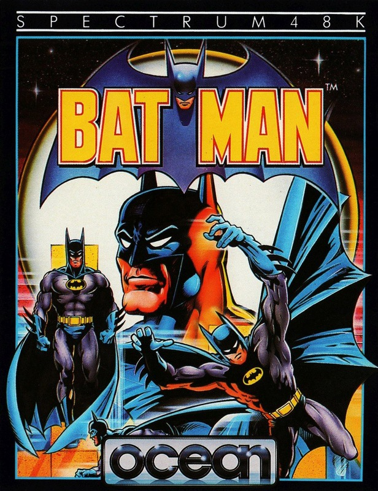
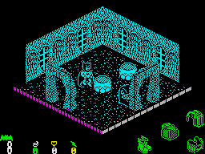
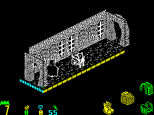
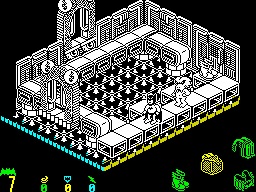
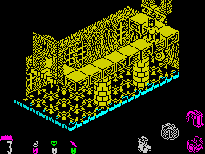

Batman


{kind=link}

| Publisher: | Ocean |
| Price: | £7.95 |
| Year: | 1986 |
| Source: | CRASH, Issue 28 |

Gotham City’s caped crusader continues his quest against crime in Ocean’s new release, Batman. In this computerised adventure, our clean-living hero’s ever faithful friend Robin has been kidnapped by an evil arch villain and it’s up to Batman to rescue the Boy Wonder from the clutches of the forces of evil.
Once you’ve configured the controls for the game, defining the keys or joystick as appropriate and selecting the sound levels you require, Batman sproings into action, sliding down the pole into the Batcave complex. He’s got a problem — the Batmobile doesn’t work! Suddenly the superhero remembers — Robin was servicing the Batmobile when he was abducted, and seven vital Batmobile parts are lying hidden in the Batcave. Before he can roar forth onto the roads, Batman has to collect the seven Bat Bits and install them in the Batmobile.

He's the bigger Batman on the left — the
little guy on the right is, in fact, a Batpill.
At the start of the game Batman’s powers are limited — he can stroll round the caves, and that’s about it. He needs to find some Bat Equipment to give him the powers needed to complete his quest. Four vital Bat Devices have to be collected: Jet Batboots (for jumping); Batbag (allows the caped crusader to pick up and put down objects); a thruster (allows horizontal movement when falling) and a Low Gravity Batbelt (halves the speed of a fall).
The Batcave’s architects obviously worked on the castle in Knight Lore — the resemblance is striking — and the game is viewed and played in the same fashion. Four Bat Device icons in the bottom right hand corner of the screen are highlighted when a piece of Bat Equipment is collected. Four more Bat Icons on the left of the screen are used to display Batman’s status. Our hero starts the game with nine lives, and can collect more during his journey by collecting an Extra Life Batpill — the number of lives remaining is shown under a Batsign logo. Three more icons are used to display jumping ability, shield status and energy, and are activated when an appropriate Batpill is collected.

Good job Batman found an energy
Batpill so he can run fast — he's got
fifty five superfast steps left in his
inventory.
Batpills look like small Batmen, and tend to fall from the roof of the Batcave. They all look the same, and the only way to find out what a Batpill does, is to pick it up and spot which Batpill icon gains a number. If an Energy Batpill is picked up, Batman can move at high speed — a counter beneath the lightning flash icon ticks down with each superfast step until it reaches zero and it’s back to a strolling pace. Shield Batpills give Batman invulnerability for a while, and Jump Batpills allow a number of double strength jumps to be made. To add a little extra excitement to the game, Neutralizing Batpills turn up now and again, which remove any shield energy and super jumps in Batman’s inventory. Bad News, as the instructions say...
Another very useful thing in the Bat Cave are Reincarnation stones. If Batman touches one it disappears after recording the state of play and Batman’s position. If Batman fails in his quest and runs out of lives, the game can be continued from the point when Batman last touched a Reincarnation Stone.

pegs it away from a patrolling monster.
The Batboots are on the far right of the
walkway, on the other side of that fiend.
The Batcave has been extensively remodelled from the movie days, and it’s huge! Unfortunately, there are now some very nasty creatures lurking in the hallowed halls, all of them keen to remove a life from our hero’s stocks — one touch from a baddie and it’s one life less for the caped crusader. Spiked floors, which usually have dissolving pieces of catwalk above them, are deadly, as are some rather more innocuous objects. Conveyor belts and lifts as well as suspended, disappearing and sinking floors also provide problems to an unwary Batperson. Sometimes objects or exits to a room are too high to reach or jump onto, so Batman has to pick up Bat Objects (stuff like Elephant’s Feet and Art Nouveau Tea Pots amongst other things) and pile them up to enable him to achieve his goal.
Batman is rushing to rescue his friend — if you leave him standing in once place for too long he crosses his arms and taps a foot impatiently. He wants to collect the Bat Equipment, find the seven parts of the Batmobile so he can teleport to the launchpad, get into the Batmobile, start the motor and get on with rescuing Robin. There’s no time to lose...
CRITICISM

floor Batman risks death on his quest to
rescue Robin.
‘Despite the tremendous amount of Knight Lore type looking games I still find that coming back to this type of game is lots of fun. The front-end menu is great and caters for nearly everything you need, including three sound levels. There are lots of well detailed little creatures and objects to admire as you walk (or fly) around Batman’s caves. The animation of Batman is very life like and adds to the realism of the game which I’m sure will appeal to all age groups. The instructions are well balanced so that you can easily get into the game but still find lots of problems that will cause a lot of hassle — or pleasure if you solve them. Nearly every room has something to do in it, which means that there isn’t much trudging around aimlessly — which annoyed me about Movie. I loved Movie and this is a great follow up from Ocean, even if you have already got a shelf full of this sort of game.’
‘What a great game! The standard of games recently has shot up and it’s games like Batman that contribute to the rise in standards. The 3D effect is great, and the game has got quite a front end on it, with adjustable sound and Dark Star type definable keys. Despite the fact that this game shouldn’t take a good player a millennium to complete, it is challenging to a certain extent and is fun enough to keep anyone at the keys for a good while. The reincarnation stones scattered around the playing area are extremely useful, as they give you the opportunity to lose a few lives trying to suss out a problem and come back later with a few lives remaining. Overall, a very polished and attractive game that should keep fans of the TV series happy for ages, as well as everyone else.’
‘Bat Ma-a-a-an. Yes folks, the caped crusader comes to your Sinclair Spectrum bringing thrills, spills and chills in an action packed arcade adventure program. Gasp at the excellent graphics. Scratch your skull in bemusement at the tricky puzzles your hero has to negotiate and watch in wonderment as the defender of truth and faith attempts to rescue his lifelong sidekick Robin from the clutches of the evil villain. You will not be disappointed if you walk around to your nearest computer software stockist and purchase this truly exciting piece of software.’
COMMENTS
| Control keys: | Definable |
| Joystick: | Kempston, Interface 2, Cursor |
| Keyboard play: | Adjustable, and very responsive |
| Use of colour: | Okay; avoids attributes well |
| Graphics: | Excellent, with some really imaginative characters |
| Sound: | Not overly wonderful: a Batman theme tune and a few spot effects |
| Skill levels: | One |
| Screens: | More than 150 |
| General rating: | A neatly finished game which does Batman proud. |
| Use of computer: | 93% |
| Graphics: | 95% |
| Playability: | 94% |
| Getting started: | 91% |
| Addictive qualities: | 93% |
| Value for money: | 91% |
| Overall: | 93% |